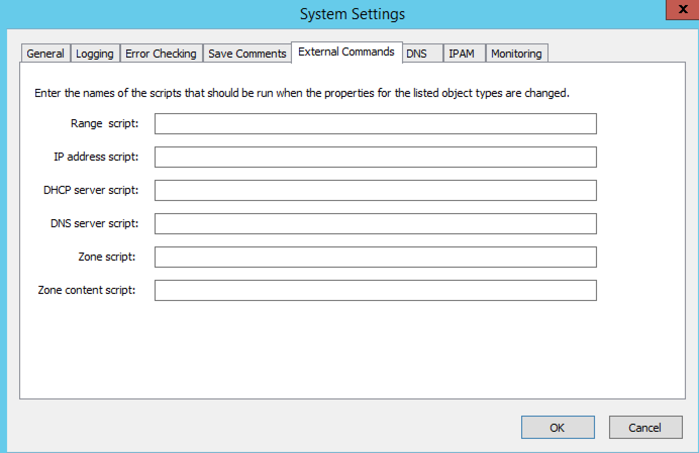

External scripts
Overview
The system can be configured to run external scripts under several conditions:
When object properties are modified.
When zone contents are changed.
When the number of free addresses in subnets go below a set threshold.
Scripts associated with object types are often used to perform lookups in external data sources and return data from these sources. To configure the system to run a script when properties for an object are modified or when zone contents are changed, do the following:
Log in as Administrator.
From the menu, select Tools, System Settings.
In the System settings dialog box, click the External Commands tab.
In the applicable field (e.g., Range script, IP Address script, etc.), type the script name and necessary startup parameters. You must enter all information for the script as you would when invoking the script from the command line. It is assumed that the script is located in the same directory as Men&Mice Central; however, if the script is stored in a different location, the path for the script must be entered.
- Example 1:
Running a script named mytest.vb. To run a script named mytest.vb that is located in the Men&Mice Central directory using the scripting host cscript, the following would be placed in the appropriate field: cscript /B mytest.vb
- Example 2:
Running an executable named checkdata.exe. To run an executable named checkdata.exe that is located in the Men&Mice Central directory the following would be placed in the appropriate field: checkdata.exe.
Click OK.
To configure the system to run a script when the number of free addresses in a subnet goes below a user-definable threshold, refer to IP Address Management—Subnet Monitoring and Utilization History.
{kind=link}
Script Interfaces
When Men&Mice Central runs an external script, it sends an XML structure as an argument to the script being called. The XML structure contains information about all custom properties that are defined for the object type. The XML structure also contains the login name of the user that triggered the script.
The XML structures differs a little depending on the type of script (property change, zone contents change, scope monitoring).
Property Change Script Interface
The XML schema for a property change script is as follows:
<?xml version="1.0" encoding="ISO-8859-1"?>
<xs:schema targetNamespace="http://tempuri.org/XMLSchema.xsd" elementFormDefault="qualified" xmlns="http://tempuri.org/XMLSchema.xsd" xmlns:mstns="http://tempuri.org/XMLSchema.xsd" xmlns:xs="http://www.w3.org/2001/XMLSchema">
<xs:element name="externalScriptParameters">
<xs:complexType>
<xs:sequence>
<xs:element ref="customFields" minOccurs="1" maxOccurs="1" />
</xs:sequence>
<xs:attribute name="userName" type="xs:string" />
</xs:complexType>
</xs:element>
<xs:element name="customFields">
<xs:complexType>
<xs:sequence>
<xs:element ref="customField" minOccurs="1" maxOccurs="unbounded" />
</xs:sequence>
</xs:complexType>
</xs:element>
<xs:element name="customField">
<xs:complexType>
<xs:sequence>
</xs:sequence>
<xs:attribute name="customFieldID" type="xs:string" />
<xs:attribute name="customFieldName" type="xs:string" />
<xs:attribute name="objectID" type="xs:string" />
<xs:attribute name="objectType" type="xs:string" />
<xs:attribute name="value" type="xs:string" />
</xs:complexType>
</xs:element>
</xs:schema>
An example XML structure with three custom properties named Location, Country and Region might look as follows:
<?xml version="1.0"?>
<externalScriptParameters username="administrator">
<customFields>
<customField customFieldID="24" customFieldName="Location"
objectID="27" objectType="4" value="location1"></customField>
<customField customFieldID="25" customFieldName="Country"
objectID="27" objectType="4" value=""></customField>
<customField customFieldID="26" customFieldName="Region"
objectID="27" objectType="4" value=""></customField>
</customFields>
</externalScriptParameters>
Upon completion, the script must create a new XML structure and return it to Men&Mice Central. The schema for the XML structure that is returned is as follows:
<?xml version="1.0" encoding="ISO-8859-1"?>
<xs:schema targetNamespace="http://tempuri.org/XMLSchema.xsd"
elementFormDefault="qualified" xmlns="http://tempuri.org/
XMLSchema.xsd" xmlns:mstns="http://tempuri.org/XMLSchema.xsd"
xmlns:xs="http://www.w3.org/2001/XMLSchema">
<xs:element name="result">
<xs:complexType>
<xs:choice minOccurs="1" maxOccurs="2">
<xs:element ref="customFields" />
<xs:element ref="error" />
</xs:choice>
<xs:attribute name="success" type="xs:string" />
</xs:complexType>
</xs:element>
<xs:element name="customFields">
<xs:complexType>
<xs:sequence>
<xs:element ref="customField" minOccurs="0" maxOccurs="unbounded"/>
</xs:sequence>
</xs:complexType>
</xs:element>
<xs:element name="customField">
<xs:complexType>
<xs:sequence>
</xs:sequence>
<xs:attribute name="customFieldID" type="xs:string" />
<xs:attribute name="customFieldName" type="xs:string" />
<xs:attribute name="objectID" type="xs:string" />
<xs:attribute name="objectType" type="xs:string" />
<xs:attribute name="value" type="xs:string" />
</xs:complexType>
</xs:element>
<xs:element name="error">
<xs:complexType>
<xs:sequence>
</xs:sequence>
<xs:attribute name="code" type="xs:string" />
<xs:attribute name="message" type="xs:string" />
</xs:complexType>
</xs:element>
</xs:schema>
An example XML structure with three custom properties named Location, Country and region might look as follows:
<?xml version="1.0"?>
<result success="1">
<customFields>
<customField customFieldID="24" customFieldName="loc" objectID="27" objectType="4" value="location1"></customField>
<customField customFieldID="25" customFieldName="Country" objectID="27" objectType="4" value="USA"></customField>
<customField customFieldID="26" customFieldName="Region" objectID="27" objectType="4" value="Texas"></customField>
</customFields>
</result>
Men&Mice Central uses the information in the XML structure to update other custom properties or to display an error message if the success attribute on the result element is set to 0. The following XML example shows how an error message can be returned by the external script.
<?xml version="1.0"?><result success="0"><error code="1"message="The error message."></error></result>
The XML structure is not required to return information about all custom properties, only fields that the script has changed. Unknown property fields are ignored by Men&Mice Central.
Zone Content Change Script Interface
The XML schema for a zone content change script is as follows:
<?xml version="1.0" encoding="ISO-8859-1"?>
<xs:schema targetNamespace="http://tempuri.org/XMLSchema.xsd" elementFormDefault="qualified" xmlns="http://tempuri.org/XMLSchema.xsd" xmlns:mstns="http://tempuri.org/XMLSchema.xsd" xmlns:xs="http://www.w3.org/2001/XMLSchema">
<xs:element name="externalScriptParameters">
<xs:complexType>
<xs:sequence>
<xs:element ref="object" minOccurs="1" maxOccurs="1" />
</xs:sequence>
<xs:attribute name="userName" type="xs:string" />
</xs:complexType>
</xs:element>
<xs:element name="object">
<xs:complexType>
<xs:sequence>
<xs:element name="id" type="xs:integer" minOccurs="1" maxOccurs="1" />
<xs:element name="type" type="xs:integer" minOccurs="1" maxOccurs="1" />
<xs:element name="server" type="xs:string" minOccurs="1" maxOccurs="1" />
<xs:element name="view" type="xs:string" minOccurs="1" maxOccurs="1" />
<xs:element name="zone" type="xs:string" minOccurs="1" maxOccurs="1" />
<xs:element name="fqName" type="xs:string" minOccurs="1" maxOccurs="1" />
</xs:sequence>
</xs:complexType>
</xs:element>
</xs:schema>
An example XML structure for a zone change script might look as follows for a zone that exists in a view:
<?xml version="1.0" encoding="ISO-8859-1"?>
<externalScriptParameters userName="administrator">
<object>
<id>2534</id>
<type>13</type>
<server>bind1.corp.net.</server>
<view>internal</view>
<zone>zone.com.</zone>
<fqName>bind1.corp.net.:internal:zone.com.</fqName>
</object>
</externalScriptParameters>
An example XML structure for a zone change script might look as follows for a zone that is not in a view:
<?xml version="1.0" encoding="ISO-8859-1"?>
<externalScriptParameters userName="administrator">
<object>
<id>2635</id>
<type>13</type>
<server>dns1.corp.net.</server>
<view />
<zone>my.zone.com.</zone>
<fqName>dns1.corp.net.::my.zone.com.</fqName>
</object>
</externalScriptParameters>
A zone content change script does not have any return value.
Subnet Monitoring Script Interface
The XML schema for a subnet monitoring script is as follows:
<?xml version="1.0" encoding="ISO-8859-1"?>
<xs:schema targetNamespace="http://tempuri.org/XMLSchema.xsd" elementFormDefault="qualified" xmlns="http://tempuri.org/XMLSchema.xsd" xmlns:mstns="http://tempuri.org/XMLSchema.xsd" xmlns:xs="http://www.w3.org/2001/XMLSchema">
<xs:element name="scopeMonitor">
<xs:complexType>
<xs:sequence>
<xs:element name="scope" type="xs:string" minOccurs="0" maxOccurs="1" />
<xs:element name="server" type="xs:string" minOccurs="0" maxOccurs="1" />
<xs:element name="superscope" type="xs:string" minOccurs="0" maxOccurs="1" />
<xs:element name="threshold" type="xs:integer" minOccurs="1" maxOccurs="1" />
<xs:element name="available" type="xs:integer" minOccurs="1" maxOccurs="1" />
<xs:element name="fixed" type="xs:boolean" minOccurs="1" maxOccurs="1" />
<xs:element name="thresholdType" type="xs:string" minOccurs="1" maxOccurs="1" />
</xs:sequence>
</xs:complexType>
</xs:element>
</xs:schema>
The value of the thresholdType element will be either static or dynamic depending on whether the threshold being crossed is one of dynamically allocatable addresses (i.e., available addresses in address pools) or if it is a threshold set for static addresses (i.e., available addresses outside of address pools).
Note
The global subnet monitor, set through the system settings dialog, is the only one that takes superscopes into account. When the global subnet monitor actions are performed, due to the conditions being met for a superscope, the XML generated will contain a <server> tag and a <superscope> tag.
An example XML structure for a subnet monitoring script might look as follows for scope:
<?xml version="1.0" encoding="ISO-8859-1"?>
<scopeMonitor>
<scope>123.45.67.0/24</scope>
<threshold>20</threshold>
<available>8</available>
<fixed>0</fixed>
<thresholdType>dynamic</thresholdType>
<customFields>
<customField customFieldID="1" customFieldName="Title" objectID="526" objectType="6" value="Your subnet title"></customField>
<customField customFieldID="2" customFieldName="Description" objectID="526" objectType="6" value="You subnet description"></customField>
<customFields>
</scopeMonitor>
The XML structure is slightly different if a superscope (MS DHCP) or a shared-network (ISC DHCP) configuration is used. An example XML structure for a scope monitoring script might look as follows for a superscope / shared-network configuration:
<?xml version="1.0" encoding="ISO-8859-1"?>
<scopeMonitor>
<server>dhcp1.corp.net.</server>
<superscope>office</superscope>
<threshold>20</threshold>
<available>22</available>
<fixed>1</fixed>
<thresholdType>dynamic</thresholdType>
</scopeMonitor>
A subnet monitoring script does not have any return value.
Example Visual Basic Script
The following example script, written in Visual Basic, shows how a script could return different values depending on the user that is running the script. The script is called when an object property changes.
Dim fso, stdin, stdout, stderr, xmlDoc
'The next four lines connect the script and the "Men&Mice Suite"
Set fso = CreateObject ("Scripting.FileSystemObject")
Set stdin = fso.GetStandardStream (0)
Set stdout = fso.GetStandardStream (1)
Set stderr = fso.GetStandardStream (2)
Set xmlDoc=CreateObject("Microsoft.XMLDOM") xmlDoc.async="false" 'read xml
from MMSuite xmlDoc.loadXml(stdin.ReadAll)
Dim xElLocationCodeField, theCode, xElCustomFields, theUser
'Get the username
theUser = xmlDoc.selectSingleNode("/externalScriptParameters").getAttribute("userName")
'Select all the customfields
Set xElCustomFields = xmlDoc.selectSingleNode("/externalScriptParameters/customFields")
'Get the current value of the location code field
Set xElLocationCodeField = xElCustomFields.selectSingleNode("customField[@customFieldName='Location']")
theCode = xElLocationCodeField.getAttribute("value")
Dim success, retVal1, retVal2 success = false
' Very simple logic, here a DB query could be performed or some other lookup
if theCode = "l1" then
retVal1="USA"
retVal2="Washington"
success = true
elseif theCode = "l2" then
retVal1="UK"
retVal2="London"
success = true
end if
' logic ends
Dim xReturnDoc, xElResult
'create return document
Set xReturnDoc = CreateObject("Microsoft.XMLDOM")
Set xElResult = xReturnDoc.createElement("result")
if success then
xElResult.setAttribute "success", "1"
'set the value of xml that we return. It is OK to omit fields that are not changed by script
xElResult.appendChild xElCustomFields.cloneNode(true)
Dim xElChange
Set xElChange = xElResult.selectSingleNode("/customFields/customField[@customFieldName='Country']")
xElChange.setAttribute "value", retVal1
Set xElChange = xElResult.selectSingleNode("/customFields/customField[@customFieldName='City']")
xElChange.setAttribute "value", retVal2
else
xElResult.setAttribute "success", "0"
'add error element
Dim xElError
Set xElError = xReturnDoc.createElement("error")
xElError.setAttribute "code", "1"
xElError.setAttribute "message", "Unknown location."
xElResult.appendChild xElError
end if
xReturnDoc.appendChild xElResult
'finally return the xml
stdout.WriteLine xReturnDoc.xml
Example PowerShell Script
Note
Powershell scripts can be run natively by Men&Mice by starting the command with “powershell”, “powershell.exe” or simply with the path to the .ps1 file. Powershell can then read the stdin with [Console]::In.ReadToEnd()
Instructions
Copy the psExec.vbs and the ScopeMonScript.ps1 to the c:ProgramDataMen and MiceCentral directory.
In Tools->System Settings->Monitoring, add it in the Default scope monitoring settings as follows:
cscript /B /T:120 ./psExec.vbs ScopeMonScript.ps1 ignore ignore
And then configure a dynamic threshold. The monitor will be executed every 10 minutes during the DHCP synchronization interval.
param([Parameter(Mandatory=$false,ValueFromPipeLine=$false)]$UserName = "",
[Parameter(Mandatory=$false,ValueFromPipeLine=$false)]$Password = "",
[Parameter(Mandatory=$false,ValueFromPipeLine=$false)]$xmlFileName = "")
$strInput = get-content $xmlFileName
#$strInput = $args
# write output for troubleshooting in file:
#Add-Content -Path .\monitoroutput.xml $strInput
$strXML = [string]::Join(" ", $strInput)
$objXML = [xml]$strXML
$subnetMonitor = (Select-Xml -XML $objXML -XPath "/subnetMonitor").Node
# Check if it's an alert or fixed message
# The script only cares about alerts
if ($subnetMonitor.fixed -eq "0")
{
$strAlert = "Alert: The following scope or subnet has fewer IPs available than the configured threshold."
# We could send here an email or generate a trap or...
#Send-MailMessage -SmtpServer "smpt.example.com" -From "subnetmonitor@example.com" -To "alert1@example.com;alert2@example.net" -Subject "Subnet Monitor Message" -Body $strOutput
# First handle the superscopes
if ($subnetMonitor.superscope -ne $null -and $subnetMonitor.superscope -ne "")
{
$strOutput = @"
$strAlert
Superscope: $($subnetMonitor.superscope)
Alert Date: $(Get-Date -Format G)
Server: $($subnetMonitor.server)
Threshold: $($subnetMonitor.threshold)
IPs Available: $($subnetMonitor.available)
Subnet Type: $($subnetMonitor.thresholdType)
"@
New-EventLog -Source SubnetMonitor -LogName Application
Write-EventLog -LogName Application -Source SubnetMonitor -EventID 1063 -EntryType Warning -message "$strOutput"
#Add-Content -Path .\superscopemonitor_msg.txt $strOutput
}
else
{
# then in the else clause the normal scopes
$strOutput = @"
$strAlert
Alert Date: $(Get-Date -Format G)
Scope: $($subnetMonitor.subnet)
Threshold: $($subnetMonitor.threshold)
IPs Available: $($subnetMonitor.available)
Subnet Type: $($subnetMonitor.thresholdType)
"@
New-EventLog -Source SubnetMonitor -LogName Application
Write-EventLog -LogName Application -Source SubnetMonitor -EventID 1064 -EntryType Warning -message "$strOutput"
#Add-Content -Path .\scopemonitor_msg.txt $strOutput
}
}
else
{
# possible issue fixed message
}